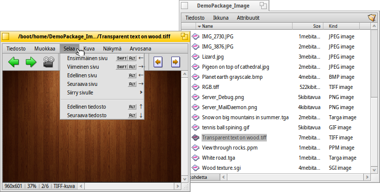
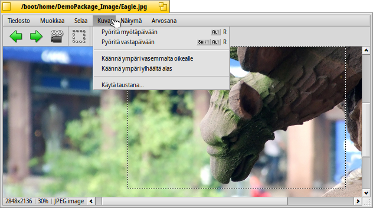

Suomi
Suomi Français
Français Deutsch
Deutsch Italiano
Italiano Русский
Русский Español
Español Svenska
Svenska 日本語
日本語 Українська
Українська 中文 ［中文］
中文 ［中文］ Português
Português Slovenčina
Slovenčina Magyar
Magyar Português (Brazil)
Português (Brazil) English
English Kuvakatselin
Kuvakatselin
| Työpöytäpalkki | Ei löydy Työpöytäpalkista, käynnistetään normaalisti kaksoisnapsauttamalla tuettua tiedostoa. | |
| Sijainti | /boot/system/apps/ShowImage | |
| Asetukset | ~/config/settings/ShowImage_settings |
Kuvakatselin sallii sinun katsella kuvatiedostoja kaikisssa muodoissa, jotka Tietomuuntimet tukevat. Uudet muodot tunnistetaan automaattisesti, kun niiden muuntimet lisätään järjestelmään. Tämä on tehty esimerkiksi Haikun vektorikuvaketiedostoille, WonderBrush-kuville tai kun WebP-kuvat tulivat käytettäviksi.
Kuvakatselin tarjoaa minimaalisia editointiominaisuuksia karsimalla, kiertämällä tai kääntämällä kuvia ja tallentaen niitä toisiin muotoihin.
 Katsotaan
Katsotaan

-valikko tarjoaa aluksi kansion kaikkien kuvatiedostojen (tai kyselytulosikkunan) ja asettaa 2:sta sekunnista 20:een sekuntiin.
Muut komennot koskevat parhaillaan näytettävää kuvatiedostoa (muuttamatta ikkunan kokoa):
näyttää kuvan 100 prosentin loitonnustekijällä.
supistaa kuvan takaisin ikkunakehykseen, esim.: sen jälkeen kun siihen on loitonnuttu tai ikkunan koon muuttamisen jälkeen.
ja laajentavat ja kaventavat kuvaa 10 prosentin askelin. Loitontaminen ja lähentäminen tehdään hiiren rullauspainikkeella; kuvan venyttämiseksi suuremmaksi kuin ikkuna sinun on yksinkertaisesti napsautettava kuvaa hiiren ykköspainikkeella ja raahattava hiirtä ympäriinsä.
Kaksi asetusta ei koske parhaillaan näytettävää kuvaa ja ne on muistettava kun selataan kuvia peräkkäin:
soveltaa hyvin nopeaa suodatusta, kun loitonnus vähentää särmikkäitä viivoja ja tuottaa pehmeämmän tuloksen.
venyttää pienemmät kuvat täyttämään nykyisen ikkunakehyksen.
Sitten on -tila valitsimella joka korvaa kuvan alalaidan tiedostonimen.
Viimeiseksi, näyttää tai piilottaa graafiset ohjauskomponentit:

Vasemmalta oikealle: Edellinen kuvat, seuraava kuva, aloita diaesitys (kokonäyttötilassa), valintatila, alkuperäinen koko, sovita ikkunaan, lähennä, loitonna.
Useimmat yleisimmin käytetyistä komennoista on saatavilla asiayhteysvalikosta napsauttamalla hiiren kakkospainikketta kuvan päällä. Näppärää, kun ollaan kokonäyttötilassa.
Selataan

Kuvan avaamisen jälkeen voit nopeasti selata lävitse kaikki muut kuvat samassa kansiossa (tai kyselytulosikkunassa) painamalla näppäimiä ↑/↓ tai ←/→. Voit nähdä, kuinka valinta vaihtuu vastaavasti Seuraaja-ikkunassa.
On eräs nopea tapa avata nykyisen kuvan kansio ja jopa navigoida sen yläkansioon ja alikansioon. Se toimii juuri kuin alasporautumisnavigointi Seuraajassa napsauttamalla tilapalkin tietoaluetta, joka näyttää nykyisen kuvan koon ja muodon.
Valikon katsominen näyttää toisen selaustyypin: Jotkut kuvamuodot, kuten TIFF, voivat sisältää useita sivuja yhdessä tiedostossa. Komennot kuten ja sallivat sinun navigoida noilla sivuilla.
Muokataan

-valikko tarjoaa muutamia kuvakatseluun välttämättömiä manipulaatioita: kuvan kiertoa ja kääntämistä. Huomaa kuitenkin, että todellinen kuvatiedosto ei muutu. Tiedostoon lisätään vain attribuutti niin että ne näytetään pyöritettynä tai käännettynä kun avaat sen seuraavan kerran.
avaa asetusohjelman Tausta-asetukset kuvan asettamiseksi taustakuvaksi työtilaasi.
Rajaus on eräs toisinaan tarvittu ominaisuus. Leikattavan kehyksen rajaamiseksi voit vaihtaa an valikosta ja raahata ruutu hiiren ykköspainikkeella. Jos ett halua ensin vaihtaa tilaa, voit luoda tämän ruudun "normaalitilassa" pitämällä yksinkertaisesti alhaalla näppäintä CTRL samalla kun raahaat hiiren ykköspainikkeella, mikä normaalisti siirtää kuvaa sivusuunnasa.
tai näppäin ESC poistaa valintaruudun.
Seuraava kappale näyttää kuinka itse asiassa tallennetaan rajattu alue.
Tallennetaan ja muunnetaan
Kuvan tallentamiseksi tai muuntamiseksi kaikkiin käytettävissä oleviin muotoihin voit kutsua normaalin -valikkorivin valikosta sekä valita muodon ja tiedostonimen.
Usein vielä nopeampaa, erityisesti jos Seuraaja-ikkuna on jo avoinna, on raahaa ja pudota -toiminnon käyttäminen.

Näin yllä mainittu rajaaminen lopetetaan. Joko valitaan yllä kuvattu kehys, tai valitaan koko kuvalle. Raahaa ja pudota valinta Työpöydälle tai mihin tahansa Seuraaja-ikkunaan uuden kuvaleikkauksen luomiseksi samassa muodossa kuin alkuperäinen kuva.
Toisen tiedostomuodon tallentamiseksi raahaa hiiren kakkospainikkeella ja valitse muoto asiayhteysvalikosta tiedostoa pudotettaessa.
Pikanäppäimet
Tässä on hyödyllisimpien pikanäppäinten luettelo:
| ← / ↑ | Edellinen kuva | |
| → / ↓ | Seuraava kuva | |
| DEL | Siirrä Roskakoriin | |
| + | Lähennä | |
| - | Loitonna | |
| 0 | Alkuperäinen koko (100% loitonnus/lähennys) | |
| 1 | Sovita ikkunaan | |
| ALT ENTER | Vaihtele kokonäyttötilaa (myös kaksoisnapsautuksen kautta) | |
| CTRL | Pitämällä alhaalla näppäintä CTRL voit luoda valintakehyksen vaihtamatta valintatilaa eksplisiittisesti. |